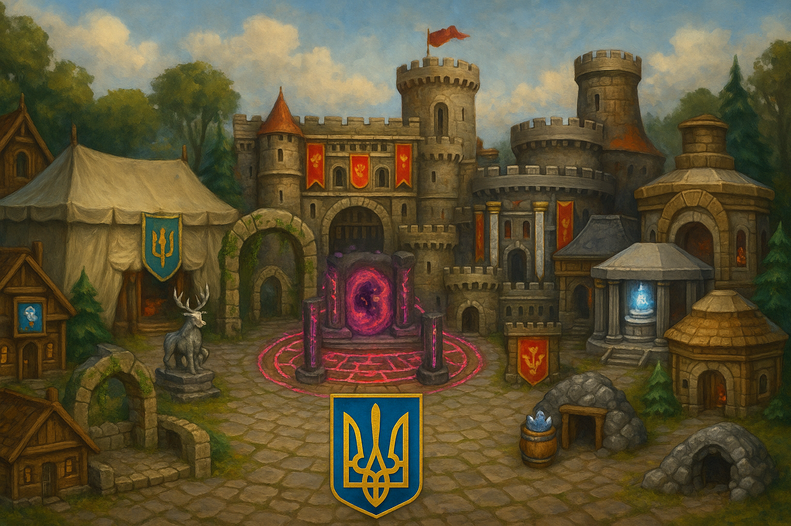

Гільдії
У грі Орна існує кілька основних гільдій, кожна з яких пов’язана з певною активністю або видом контенту. Приєднання до гільдій дозволяє відкривати будівлі, рецепти, функції, класи та інше.
- Гільдія Титанів: призначена для гравців, які займаються контентом Веж Титанів.
- Гільдія Мечі Фінесса: орієнтована на PvP-гравців.
- Гільдія Спелеологів: спрямована на гравців, які активно проходять данжени.
- Гільдія Мандрівників: фокус на подорожі та мобільність.
- Гільдія Коло Страждань: пов’язана з просунутим PvE-контентом. Часто використовується на хай лвлах.
- Гільдія Риболовів: відкриває можливості в рибальстві — обмін риби на ресурси, бафи тощо.
- Гільдія Монументів: для гравців, що займаються проходженням монументів та отриманням бафів.
- Гільдія Оракулів: доступ до храму оракула та використання мнемоніків.
Монументи
//TO DO
Shrine of Demeter: Increased positive status duration
Shrine of Ithra: Statuses easier to apply, +??? max status damage
Shrine of Thor: +10% crit chance, +5% crit damage
Shrine of Vulcan: Increases Attack and Magic by ?%
Якщо в кінці монумента не вбити боса, то можна його залишити "на потім". І, наприклад, підготувати декілька данжів під фарм ендлесів. Через кнопку повернутись в монумент, вбити файнал боса і отримати баф. Після цього можна фармити ендлеси з бафом, наприклад, на кріт. профіт